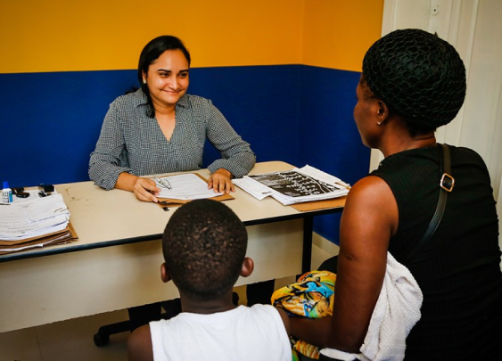
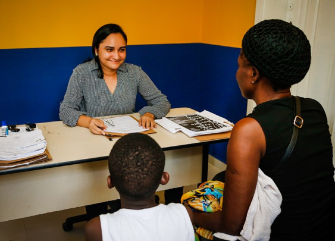

O assistente social é um profissional com formação de nível superior que trabalha com planejamento, gestão e execução de políticas, programas e serviços sociais para a população.
A principal missão desse profissional é garantir que as políticas e direitos sociais sejam acessíveis para a população em geral, incluindo demandas como educação, saúde, previdência, habitação e cultura.
Os assistentes sociais são profissionais essenciais para que crianças, jovens, adultos e idosos tenham uma condição plena e satisfatória de vida, conforme indica a Constituição Federal.
Áreas de trabalho:
Educação;
Proteção de menores;
Saúde;
Empresas no geral;
Qual a diferença entre assistência social e serviço social ?
Assistência social é uma política pública que fica a cargo do Estado. Ou seja, é um direito de todo cidadão que dela precisar.
Ela está prevista na Constituição Federal de 1988 e é regulamentada pela LOAS (Lei Orgânica da Assistência Social).
Mas o que isso quer dizer? É dever do Estado dar assistência para a população e garantir que seus direitos básicos sejam atendidos, como educação, saúde e moradia, por exemplo.
Já o serviço social, é uma área do conhecimento, um campo de estudos. É a formação para aqueles que desejam compreender e trabalhar com assistência social.
Ou seja, assistência social e serviço social são conceitos complementares. A diferença é que o primeiro trata de um conjunto de políticas públicas e o segundo de um campo do conhecimento.
Quando procurar um assistente social?
Se você conhece idosos, crianças, dependentes químicos ou pessoas em situação de risco, em condições muito ruins de vida, recomende que essas pessoas procuremum assistente social, que irá ampará-los, oferecerá tratamento, assistência psicológica/social, trazendo possiveis soluções para este poblema.
Marque sua consulta!
Clínico geral em Cascavel é na UBS!